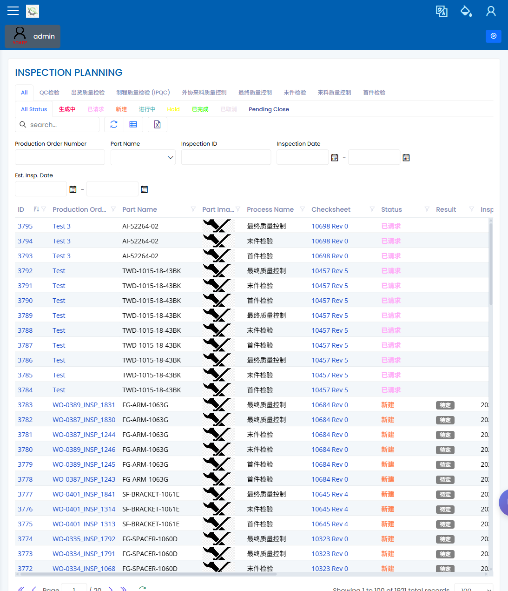

Inspection Planning
Path: Quality / Inspection Planning URL: needs-decision (authenticated screenshot exists, but the exact deployed route was not recorded)
What This Page Is For
Use Inspection Planning to review which production stages require inspection before, during, or after production. This area is still pending superior confirmation for demo scope, so keep it visible in the manual and flag any mismatch as a decision item instead of removing it.
What You See
- A list of planned inspection rows tied to production work.
- Filters for narrowing the list by production, process, stage, result, or date.
- A form/dialog for reviewing the selected inspection plan.
- Result and status fields that show whether inspection work is pending, accepted, rejected, or needs follow-up.
What You Do
- Open the page from the Quality area.
- Filter to the production order, process, or inspection stage being reviewed.
- Open the row and confirm the part, process stage, sample details, and expected inspection route.
- Check whether a SMARTQC check sheet or inspection entry is expected before work continues.
- Escalate mismatches to the planner, production engineer, or quality engineer before release.
What To Check
- The row belongs to the correct job and process stage.
- The inspection stage name matches what the operator expects to see.
- The status/result shown on screen supports the production decision.
- Required inspection setup is visible before the job is released.
Common Issues
| Issue | What it means |
|---|---|
| No row appears after filtering | The job may not have an inspection plan, or the filter may be too narrow. |
| Stage does not match the operation | The inspection may be attached to the wrong process step. |
| Operator cannot find the inspection | The job may not be released to the expected stage, or the check sheet may not be ready. |
| Result is not clear | Ask Quality to review the inspection record before releasing the next step. |
Related Pages
Screenshot
